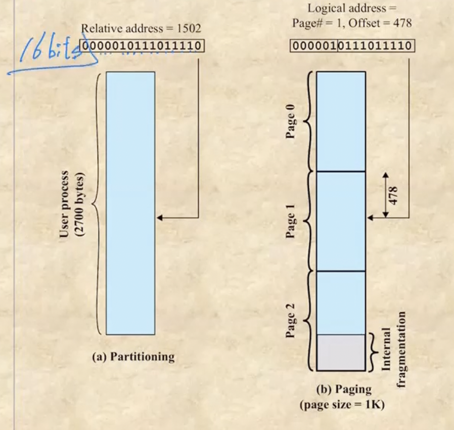
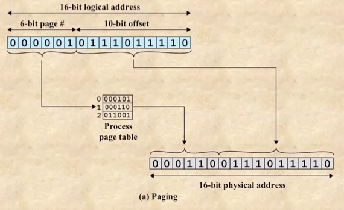
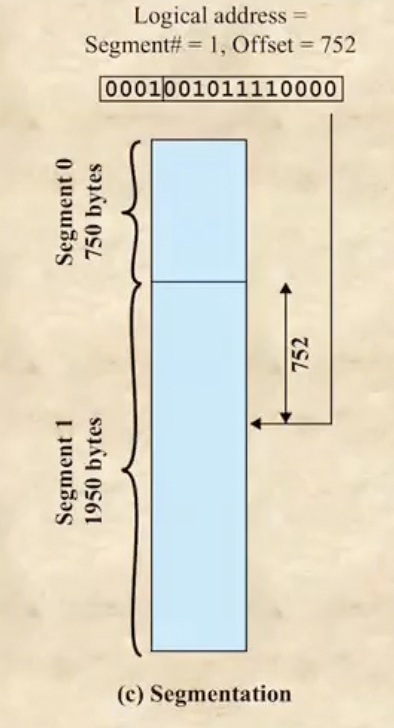
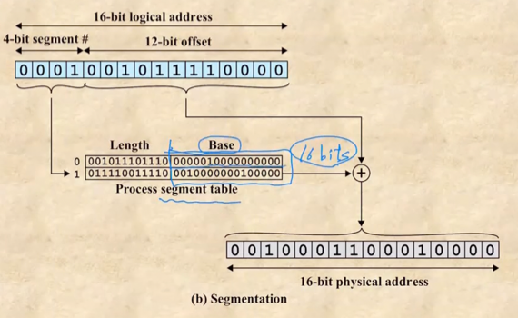

충남대학교 컴퓨터공학과 류재철 교수님의 "운영체제 및 실습" 강의를 필기한 내용입니다.
다소 잘못된 내용과 구어적 표현 이 포함되어 있을 수 있습니다.
Overlay 기법
- 옛날에는 메모리가 부족하기 때문에 프로그램의 일부분만 메모리에 올려놓고 올려놓은 부분을 전부 실행하고 나면 나머지 부분을 올려서 프로그램을 구동햇다
- 새로 올라온 부분은 이전 부분을 지워버리게 되는데 이것을 이제 overwrite라고 한다
- 근데 이제 프로그램을 잘못 나눠서 나머지 부분을 실행시키는데 앞부분의 자원이 필요해지면 또 아래서 갖고와야 되므로 프로그램의 구동시간이 오래 걸리게 된다 - 따라서 제대로 나눌 수 있도록 잘 프로그래밍 하는 것이 중요했다 이말이야
- 이런 프로그램을 나눠 순차적으로 메모리에 올리며 구동하는 것을 Overlay기법이라고 한다
- 얘는 이제 swapping이랑은 다르다 - swapping은 바꿔치기하는거고 overlay는 덮어쓰는 개념
Memory, Program Partition
- 이제 multiprogramming을 하기 위해 여러개의 프로그램을 메모리에 올리고싶어졌다
- 그래서 메모리를 쪼개서(memory partition)여러 프로그램을 올리게 되는데
- 메모리를 쪼개다 보면 프로그램이 그 공간 안에 다 안들어갈 수가 있으므로 프로그램도 쪼개게 된다(program partition)
- OS는 이제 메모리를 어떻게 쪼개고 프로그램도 어떻게 쪼개서 여기에 집어넣을건지를 관리해야 한다
Address Translation
- 우리가 코드를 짤때 쓰는 변수같은것들은 다 symbolic address이다 - 우리가 변수에 값을 저장한다는 말은 그 변수가 의미하는 주소에 저장된 값이 그것이라는 소리이므로
- 근데 이제 컴파일 과정을 통해 오브젝트파일(c언어에서 .o 파일)로 바뀌게 되면 이 주소는 logical(relative) address가 된다 - 얘는 프로그램의 시작주소를 0이라고 했을때 해당 symbolic address가 저장된 곳의 위치 - 시작점과 현위치의 차이점이라고 생각하면 된다이다.
- 이게 실행가능한 파일(executable code, machine code)가 되어 실행되면 실제로 메모리에 저장된 주소인 physical(absolute) address가 된다
- 얘는 실제 주소를 가리켜야 되므로 레지스터 하나에다가 프로세스가 적재된 메모리의 첫 시작점을 저장하고 거기에 relative address를 더해 physical address를 구하게 된다
- 다만 여기서 시작 주소라는 것은 PCB를 제외한 곳의 시작주소이다
- 그래서 시작주소는 Base register, 끝주소는 Bounds register에 저장된다
- bounds register는 경계선을 그어줌으로써 허용된 범위 밖을 참조하지 못하게 하는 기능을 한다
- 근데 swapping이 일어나게 돼 얘가 하드로 내려갔다가 다시 올라오면 원래 있던 그 위치로 올라오게 되는 것이 아니다. 따라서 프로세스의 첫주소가 바뀌게 되는데 이렇게 swapping에 의해 프로세스의 첫주소가 바뀌어 physical address가 바뀌는 것을 Relocate라고 한다
- OS는 이놈이 swapping 되어 다시 올라올때 어떻게 첫주소가 바뀌는지를 관리해야 한다 - relocation돼도 문제없이 physical address를 얻어낼 수 있도록
OS가 메모리 관리를 위해 해야되는 것
- Relocation : 이걸 추적하고있어야됨
- Protection : 남의 영역에 침범하지 않도록 관리
- Sharing : 프로세스 간 공유 메모리가 있을 때 protection을 지키는 선 한에서 문제없이 공유될 수 있도록 해야 함
- Logical organization, Physical organization : 실제로는 프로그램이 여러개로 나뉘어서 메모리에 적재되지만 나뉘어지지 않은것처럼 생각하도록 동작해야됨 - 이때 유저 입장에서 붙어있는걸로 생각하는 것이 Logical organization이고 컴퓨터입장에서 나뉘어있는것으로 생각하는 것이 Physical organization이다
Fixed partitioning
- Fixed partitioning : 메모리를 나눌때 고정크기로 나누는 것
Equal-size partitioning
- 그냥 딱 정해진 크기로만 자르는 것
- 하지만 얘한테는 다음과 같은 문제점이 있다 :
- 프로그램이 잘라진 크기보다 더 크면 프로그램을 잘라서 올리는 overlay기법을 사용해야 된다
- 반대로 프로그램의 사이즈가 너무 작게 되면 나머지 공간들이 낭비된다 - 이 낭비되는 공간을 internal fragmentation이라고 한다
- 따라서 나누는 크기가 너무 크면 internal fragmentation이 커지고 너무 작으면 overlay기법에 의해 IO request가 너무 많이 발생해 문제가 된다
Unequal-size partitioning
- 얘는 이제 프로그램의 크기에 딱 맞게 메모리를 나누는게 아니고 약간 호텔에서 1-2인실, 3-4인실 있는것처럼 여러개의 사이즈로 미리 나눈 다음 프로그램의 크기에 맞게 이 나뉘어진 공간에 넣는구조이다
- 이렇게 넣을때는 각 방마다 큐를 만들어서 미리 프로그램들을 분배해서 이 큐에 넣어놓는 방법도 있고 큐를 하나만 써서 메모리에 적재될때마다 그때그때 분배하는 방법도 있다.
- 하지만 얘한테도 단점이 있다 :
- 나눈 파티션의 갯수가 결국에는 메모리에 올라갈 수 있는 user program의 갯수가 된다. 따라서 fixed 보다는 올릴 수 있는 프로그램의 수가 적어지게 된다
- 얘도 internal fragment가 생긴다
Dynamic partitioning
- Dynamic partitioning : 메모리를 나눌 때 프로그램의 크기에 따라 유동적으로 나누는 것 - 그냥 프로그램의 사이즈와 동일하게 나뉘어진다
- 이제 얘는 다음과 같은 문제점이 있다 :
- 프로그램이 메모리에 적재되어있다가 나가면 그 아래에 있던애가 위로 땡겨져서 빈공간을 채우는게 아니라 그냥 비워진 상태로 있게 된다
- 근데 그 이후 이 공간보다 작은 프로그램이 여기 적재되면 남는공간이 생기는데 이 공간의 크기가 작을 경우 어떤 프로그램도 들어오지 못하는 수가 있다 - 이런 공간들을 External Fragmentation이라고 하며 이런 공간들이 많아지면 역시 메모리가 비효율적으로 돌아가게 된다
- 즉, 메모리가 남는 현상에 대해 fixed의 경우에는 internal이란 이름을 붙인거고 dynamic의 경우에는 external이라고 이름을 붙인 것
- 위와 같은 현상을 방지하기 위해 저 비워진 공간을 비워두지 않고 땡겨서 공간들을 다 합쳐 이 공간들을 활용하는 방법이 나온다. 이것을 Compaction이라고 하며 윈도우에서 “디스크 조각 모음”이라고 하는 것(물론 얘는 메모리가 아니라 하드의 빈공간을 합치는거다)이 여기에 해당한다
적재 알고리즘
- 일단 프로그램이 얼마의 메모리를 먹을지는 적재시점에 알기는 어렵다 - 그래서 대략적으로 추정해서 적재하게 됨
- 아래와 같은 적재 알고리즘들을 Placement Policy - 적재정책이라고 하더라
- First fit : 메모리의 처음부터 찾기 시작해 가장 먼저 등장하는 적재 가능한 공간에 넣는 것
- Best fit : 메모리 전체를 다 뒤져서 제일 적게 External fragment가 생기는 곳에 넣는 것
- Worst fit : 메모리 전체를 다 뒤져서 제일 많이 External fragment가 생기는 곳에 넣는 것 - Worst라고 해서 안좋은게 아니다 - 저게 크면 저부분에 또 다른 프로그램이 올라갈 확률도 많아지므로
- Next fit : 제일 최근에 넣었던 부분 바로 옆에다가 적재하는 것
- 저것들 중에 Best, worst가 적재하는데 제일 오래 걸린다
- Buddy system : 얘는 프로그램의 크기에 따라 메모리를 자르긴 하되 2의 배수에 맞춰서 메모리를 자르는 방식이다 - 만약에 100k를 요청하게 되면 128k의 메모리 공간에 적재하는 것 - 메모리 공간을 절반으로 자르고 자르고 해서 제일 잘 맞는 곳에다가 적재하게 된다
Paging
- 일단 메모리를 고정크기로 잘게 나눈다. 이 나눈 고정크기의 메모리 조각을 frame이라고 한다
- 그리고 프로그램도 같은 크기로 잘게 나눈다. 이 나눈 고정크기의 프로그램 조각은 page라고 한다
- 이 둘의 크기가 같기 때문에 하나의 페이지는 하나의 프레임에 올라가게 된다
- 고정크기를 활용하기 때문에 fixed partitioning의 상위호환이라 볼 수 있다
Page table
- 얘는 프로그램을 메모리에 적재할 때 연속된 공간에 적재하지 않을 수도 있다
- 대신 해당 프로그램이 어디어디에 적재되어있는지를 알려주는 역할을 하는 page table이 존재하게 된다
- 전에 PCB를 모아놓은 Process table이 있다고 했는데 여기에 page table도 같이 들어있다
- 이 page table은 배열처럼 인덱스마다 프로그램이 적재된 페이지의 번호를 저장한다 - 인덱스는 page번호(프로그램을 프레임 크기만큼 잘라서 앞에서부터 0, 1, … 이렇게 번호를 매긴 것), 안에 저장돼있는 값은 frame 번호(메모리 전체를 frame크기만큼 잘라서 0, 1, … 이렇게 번호를 매긴 것)
- 따라서 page 번호는 프로그램을 앞에서 잘라 매긴것이므로 logical address를 표현할 때 사용되고 frame번호는 메모리를 앞에서부터 잘라 매긴 것 이므로 physical address를 표현할 때 사용되는 것이다
- free frame table도 존재해서 남은 프레임들의 번호도 저장하게 된다
Paging에서의 physical address 구하기

- Relative address는 수치상으로 시작점부터 얼마나 떨어져 있는지를 나타내는 개념이고
- Logical address는 relative address를 page 번호를 이용해 나타낸 개념이라는 차이점이 있다 - 어쨋든 둘 다 시작점을 기준으로 거리를 나타내는 개념이다
- 왼쪽의 프로세스를 page크기인 1k로 자르면 오른쪽 그림처럼 나온다. Relative address 1502는 1024 + 478이므로 page 하나와 478만큼의 거리만큼 떨어진 곳이 해당 주소가되는 거고 이걸 logical address로 표현하면 page1번 시작점으로부터 478만큼 떨어져 있다는 의미로 page# = 1, Offset = 478이 되는 것이다 - Offset은 페이지의 시작점으로부터 얼마나 떨어져있는지를 나타내는 것
- 이것을 이진법으로 계산한 것이 위쪽에 나와있는 수치들이다. 1024는 2의 10제곱이므로 16비트로 표현된 relative address에서 6비트 /10비트로 나누면 앞쪽부분이 page#, 뒤쪽부분이 Offset이 되는 것이다

- 이것을 이용해 physical address를 나타내는 것은 이 그림에 나와 있다.
- 일단 page# 이 1 이므로 이것을 page table의 인덱스로 넣어주면 거기 저장되어있는 값이 frame# 가 되는것이다
- 따라서 이 frame# 을 6-bit page# 에다 넣어주면 바로 physical address가 나오게 되는 것 이다 - page table에 가서 frame# 만 가져다가 붙여주면 되기 때문에 address translation이 아주 간편하다
Segmentation
- 이제 얘는 고정크기로 나누는게 아니고 메모리를 프로그램의 function(module)크기로 나눠서 적재하는 기술
- 메모리와 프로그램을 같은 크기로 나누되 그 크기는 프로그램의 function(module)의 크기를 따라간다고 생각하면 된다
- 이렇게 하는 이유는 memory sharing을 할때도 function(module)단위로 하게 되므로 이것의 크기를 기준으로 나누는게 좋겟다고 생각한것
- 이렇게 function(module)을 기준으로 나눈 조각조각을 segmentation이라고 한다
- 얘는 가변크기이기 때문에 dynamic partitioning의 상위호환이라고 볼 수 있다
Segmentation에서 physical address 구하기

- 얘는 paging처럼 크기가 고정되어 있지 않으므로 앞의 몇비트는 segment# 를 나타내는데 쓰이고 나머지는 Offset을 나타내는데 쓰이는 식으로 구성된다 - paging처럼 relative address에서 몇비트를 자른다고 해서 바로 segment# 가 구해지는게 아니다
- 그래서 예시를 보면 segment# 에 4비트가 할당되어 있으므로 한 프로그램이 가질 수 있는 총 segment# 의 갯수는 2의 4제곱인 것이고 그 뒤에 offset으로 12비트가 할당되어 있으니 한 segment는 최대 크기가 2의 12제곱이 되는 것이다
- 프로세스 전체를 segment0 750, segment1 1950으로 자른 다음(자르는 기준은 당연히 module이겠쥬?) 계산해보면 logical address segment1의 offset 752부분이 relational address의 1502와 같아지게 되는 것

- 그래서 이 logical address로 physical address를 구하는 방법이 위 그림이다
- segment table은 segment가 어디서 시작하는지에 대한 주소인 base와 한 segment의 길이인 length를 담고 있는 배열이다.
- logical address의 앞 4비트를 이용해 인덱스를 알아내고, 그 인덱스로 가서 뒤의 16비트를 가져오면 그게 segment의 시작점 주소가 된다. - 이번에는 paging과 다르게 풀 주소값이 저장되어 있으므로 이 값을 offset이랑 더해 physical address를 얻어내는 것
- 그리고 length는 offset값이 정상인지를 검사하는 용도로 쓰인다. 즉, segment의 길이가 length이므로 offset이 저 값보다 작아야 정상인 것
Paged Segmentation
- 얘는 이제 저 둘을 합친 개념이다. 즉, function(module)별로 메모리에 적재를 하되 얘네들을 여러 frame에 걸쳐서 적재를 하는 것을 Paged segmentation이라고 한다
- 즉, function(module)하나를 여러 연속된 frame에 걸쳐 적재하는 것